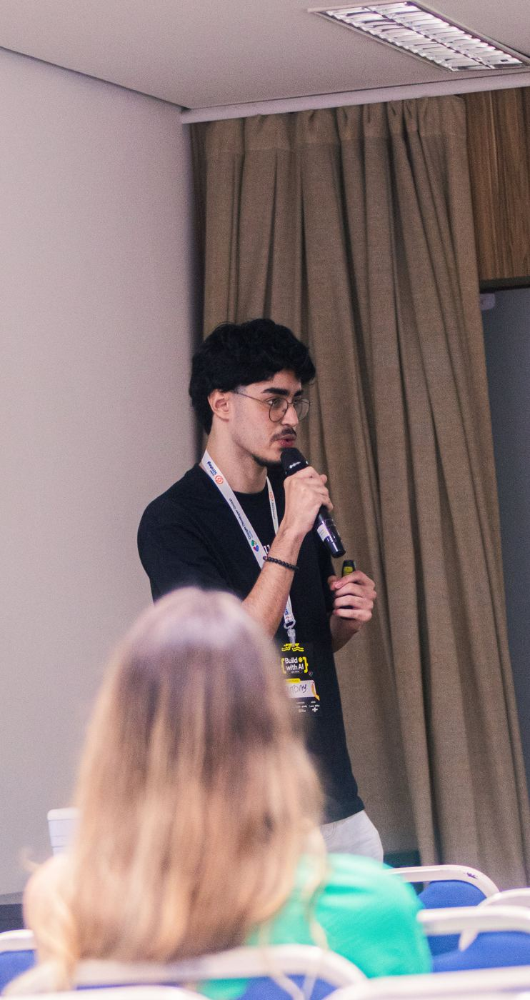
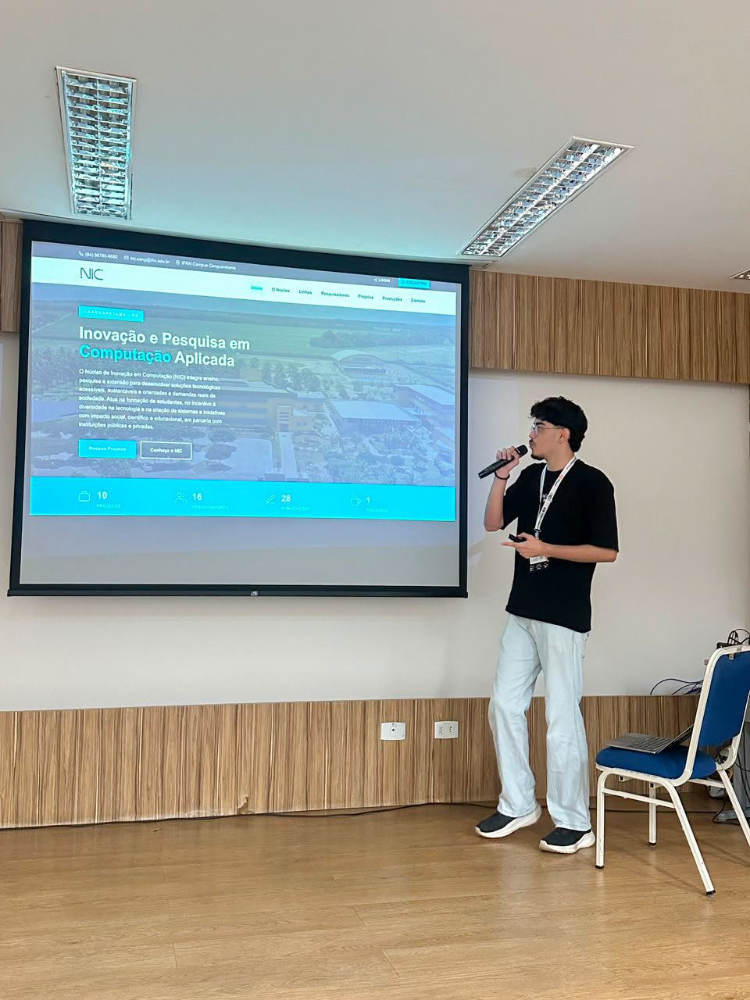
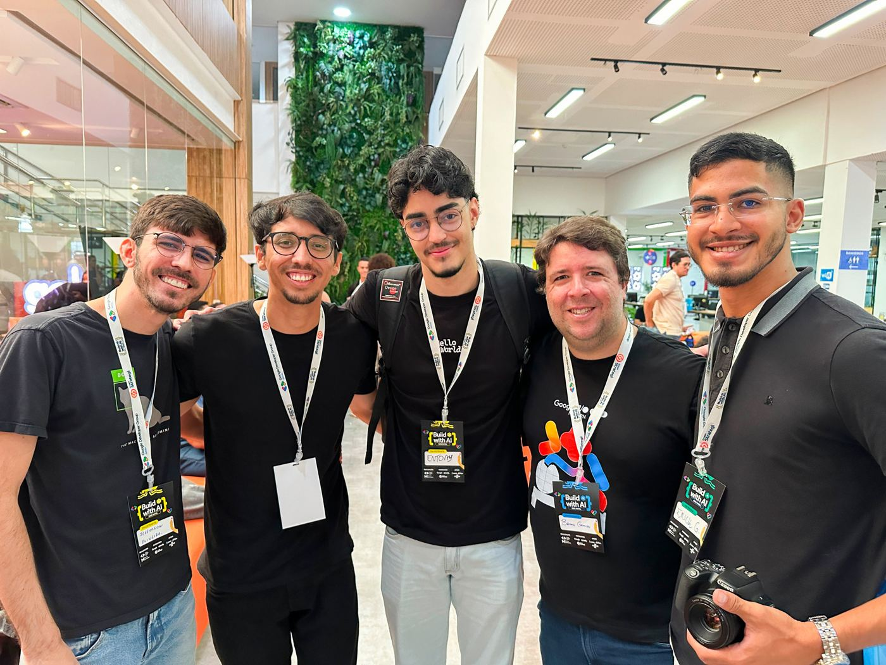
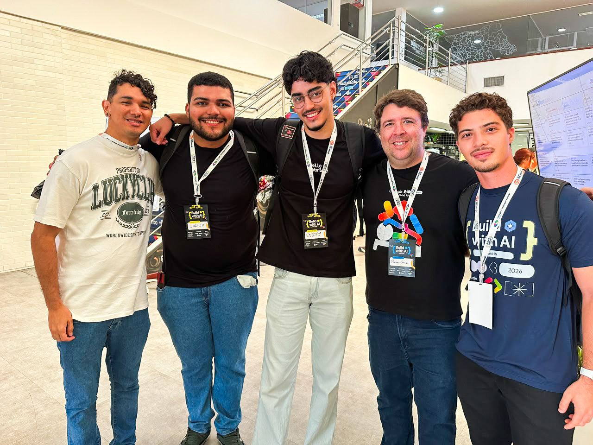

· 3 minutos de leitura
Minha Estreia aos Palcos: Como Foi Palestrar no Google I/O Extended + Build with AI 2026 – Natal
Como palestrei aos 19 anos, no terceiro período da faculdade, em um dos maiores eventos de tecnologia do RN, e o que aprendi com a experiência.

No sábado, dia 06 de junho de 2026, tive a oportunidade de palestrar no Google I/O Extended + Build with AI 2026 – Natal, evento realizado pela comunidade do Google Developer Groups (GDG) Natal.
Com o título "Como a Tecnologia Pode Mudar o Amanhã: Explorando o Cosmos das Oportunidades e do Conhecimento", usei minha palestra pra falar sobre temas pouco abordados no mundo da tecnologia — os desafios que enfrentei ao longo da minha trajetória e como transformei essas dificuldades em estratégia pra potencializar meus estudos e me destacar como estudante e futuro profissional.


Com o apoio de amigos da área e do meu professor no IFRN, Bruno Gomes, consegui transmitir essa mensagem e guiar novos estudantes rumo a um futuro promissor na tecnologia — mostrando que o caminho vai muito além da bolha do desenvolvimento web, alcançando a Ciência da Computação como um todo.


Aproveitei o espaço também pra falar sobre os alunos que oriento e como as experiências no Núcleo de Inovação em Computação (NIC) e na Bolsa de Tutoria de Aprendizagem em Laboratório me ajudaram a construir uma metodologia clara pra compartilhar com eles.
Falar em um dos maiores eventos de tecnologia do RN aos 19 anos, ainda no terceiro período da faculdade, foi uma virada de chave pra mim — um lembrete de que dá pra abrir espaço no mercado antes mesmo de terminar a graduação, desde que a gente saiba transformar as próprias dificuldades em direção.
Francisco EntonyArquivado em Palestras, Google I/O e IFRN.